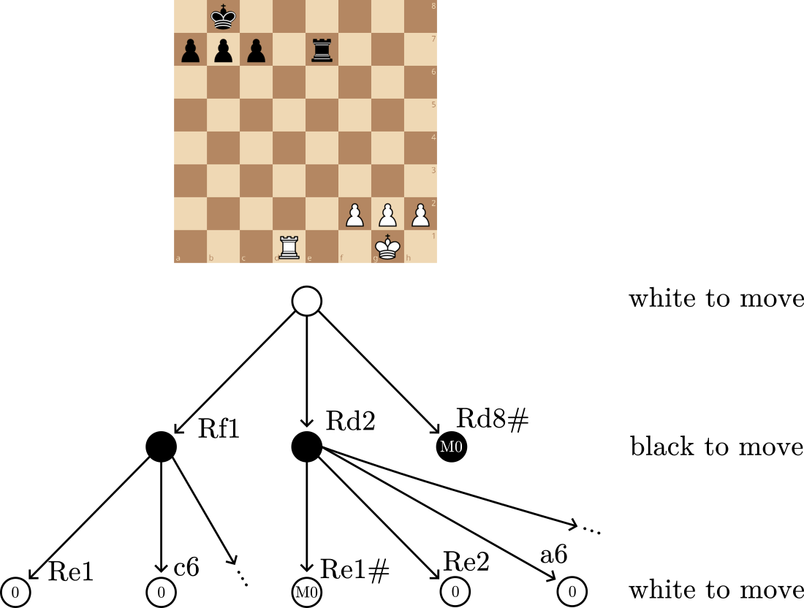

Chess Engine
I built a chess engine in C++ (mostly) from scratch. It analyzes chess positions and then evaluates its available moves efficiently using advanced algorithms. I created this project because it felt like a perfect crossover between my hobbies and my love for problem-solving and performant code. I wanted to learn more about performance optimization and how complex programs can be made faster. After reading about the history of chess engines and how they improved from simple rule-based programs to extremely powerful engines, I became interested in understanding what was happening underneath the surface. So I decided to build my own engine in C++ to better understand how board representation, legal move generation, evaluation functions, and search depth all affect an engine’s strength and speed. I also wanted to test whether I can come up with my own techniques to improve performance such as deep learning with neural networks to improve rating.
Through this project I gained more experience with lower-level programming with less abstractions and algorithmic problem solving. Building a chess engine taught me how difficult but also interesting and important optimizing code is. The techniques used to speed up the thinking part of the engine made all the difference when it came to actually playing against the engine. I learned more about building C++ programs, debugging, and how smaller improvements to the design can have a large effect on runtime. It also helped me think more carefully about how to break a complicated problem into smaller systems, such as representing the board, generating moves, evaluating positions, and choosing the best move. These skills translate well to my career because many real-world software problems require both correctness and efficiency, especially when working on critical systems as they are dependant on performance and are usually written in C++ such as financial tools, medical software, and simulations.
View GitHub